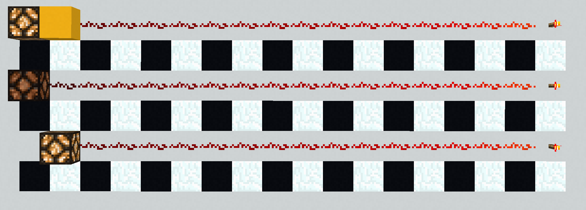

Redstone dust v inventáři se starou a novou texturou.
Redstone dust je červený materiál obdobný elektrickému vedení. Od svého zdroje napájení vede redstone napětí až 15 bloků + napájený blok, než musí být prodloužen repeaterem o dalších 15 bloků nebo komparátorem efektivně 1 blok - délka komparátoru + zbývající síla z původního zdroje.
